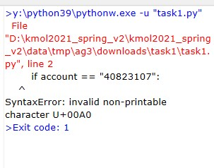

Task1 <<
Previous Next >> second task
first task
def stu2a(account):
if account == "40823107":
return account + "-2"
elif account[0:3] == "407":
return "s" + account
else:
return account
teamb = []
# open file, default is read mode, since txt content no chinese char
# no encoding = "UTF-8" is needed
with open("stage3_2a.txt") as fh:
# readlines will read into the whole line and put into list format
# has \n at the end of each line
data = fh.readlines()
#print(len(data))
for i in range(len(data)):
group = data[i].rstrip("\n").split("\t")
teamb.append(group)
output = ""
seperator = "-"*10 + "<br />"
for i in teamb[0:]:
team = i[0]
leader = stu2a(i[1])
m1 = stu2a(i[3])
m2 = stu2a(i[5])
m3 = stu2a(i[7])
m4 = stu2a(i[9])
m5 = stu2a(i[11])
m6 = stu2a(i[13])
try:
m7 = stu2a(i[15])
except:
m7 = ""
try:
m8 = stu2a(i[17])
except:
m8 = ""
leaderrepo = "<a href='http://github.com/" + leader + "/cd2021'>" + leader + " repo</a>"
leadersite = "<a href='http://" + leader + ".github.io/cd2021'>" + leader + " site</a>"
m1repo = "<a href='http://github.com/" + m1 + "/cd2021'>" + m1 + " repo</a>"
m1site = "<a href='http://" + m1 + ".github.io/cd2021'>" + m1 + " site</a>"
m2repo = "<a href='http://github.com/" + m2 + "/cd2021'>" + m2 + " repo</a>"
m2site = "<a href='http://" + m2 + ".github.io/cd2021'>" + m2 + " site</a>"
m3repo = "<a href='http://github.com/" + m3 + "/cd2021'>" + m3 + " repo</a>"
m3site = "<a href='http://" + m3 + ".github.io/cd2021'>" + m3 + " site</a>"
m4repo = "<a href='http://github.com/" + m4 + "/cd2021'>" + m4 + " repo</a>"
m4site = "<a href='http://" + m4 + ".github.io/cd2021'>" + m4 + " site</a>"
m5repo = "<a href='http://github.com/" + m5 + "/cd2021'>" + m5 + " repo</a>"
m5site = "<a href='http://" + m5 + ".github.io/cd2021'>" + m5 + " site</a>"
m6repo = "<a href='http://github.com/" + m6 + "/cd2021'>" + m6 + " repo</a>"
m6site = "<a href='http://" + m6 + ".github.io/cd2021'>" + m6 + " site</a>"
teamrepo = "<a href='http://github.com/" + leader + "/" + team + "'>" + team + " repo</a>"
teamsite = "<a href='http://" + m1 + ".github.io/" + team + "'>" + team + " site</a>"
output += teamrepo + " | " + teamsite + " | " +leaderrepo + " | " + leadersite + " | " +m1repo + " | " + m1site + " | " +m2repo + " | " + m2site + " | " +m3repo + " | " + m3site + " | " +m4repo + " | " + m4site + " | " +m5repo + " | " + m5site + " | " +m6repo + " | " + m6site
if m7 != "":
m7repo = "<a href='http://github.com/" + m7 + "/cd2021'>" + m7 + " repo</a>"
m7site = "<a href='http://" + m7 + ".github.io/cd2021'>" + m7 + " site</a>"
output += " | " + m7repo + "| " + m7site
else:
output += ""
if m8 != "":
m8repo = "<a href='http://github.com/" + m8 + "/cd2021'>" + m8 + " repo</a>"
m8site = "<a href='http://" + m8 + ".github.io/cd2021'>" + m8 + " site</a>"
output += " | " + m8repo + "| " + m8site + "<br />" + seperator
else:
output += "<br />" + seperator
print(output)
# the following will use group data to generate needed html
程式結果

video
Task1 <<
Previous Next >> second task